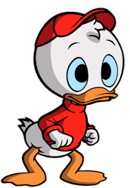

MANUEL DES CASTORS JUNIORS

Riri
Fifi
Loulou
Riri, Fifi et Loulou Duck sont les trois neveux de Donald Duck. Il s'agit sûrement des personnages
d'enfants les plus populaires de l'univers Disney. Tantôt chenapans, tantôt exemplaires, les triplés sont
devenus très vite des incontournables de l'univers des canards de Donaldville, étant inséparables de leur
oncle Donald mais aussi de leur oncle Picsou.
S'ils sont parfois les premiers à faire des bêtises, ils n'hésitent jamais à suivre leurs oncles dans
des aventures autour du monde. Ils sont aussi membres des Castors Juniors, une organisation sur le modèle
des scouts mais projetée dans l'univers de Donaldville.
Malgré la croyance populaire, les trois neveux de Donald ne sont pas nés au cinéma. Les trois canetons
apparaissent en réalité pour la première fois en bandes-dessinées, dans le comic strip en couleur du
dimanche consacré à Donald, dans la série Silly Symphonies, et daté du 17 octobre 1937.